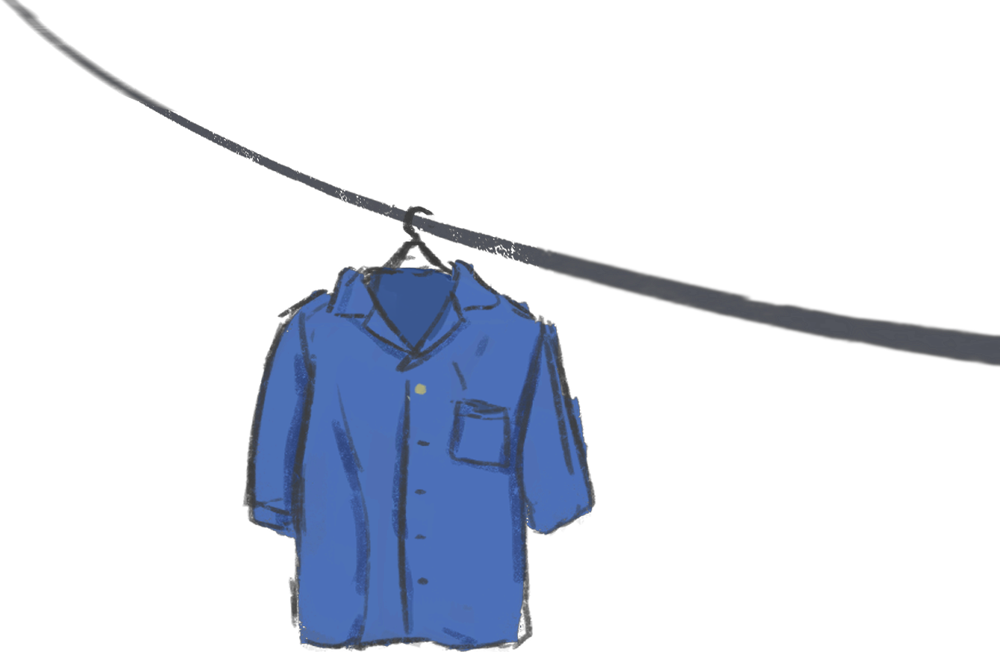

ฝนตกครับ
ต้นตระกูลผมแต่ปางบรรพ์ หลังย่ำสายัณห์ดวงตะวันเลี่ยงหลบ
จะเดินทางเยื้องย่างไปไหน จำเป็นต้องใช้จุดไต้จุดคบ
ปัจจุบันเห็นจะไม่ดี ขืนจุดไต้สิถ้ามีใครพบ
อาจจะอายขายหน้าอักโข เขาต้องฮาต้องโห่ว่าผมโง่บัดซบ
ยุคนี้มันต้องทันสมัย เพื่อนผมทั่วไปใช้ถ่านไฟตรากบ
ทั้งวิทยุและกระบอกไฟฉาย คุณภาพมากมายสะดวกสบายแทนครบ
ถ่านก็มีหลายอย่างวางกอง เขากลับรับรองว่าต้องแพ้ตรากบ
เหตุและผลเขาน่าฟังครับ ขอให้ลองสดับนะท่านที่เคารพ
คือเขาบอกว่า ถ่านไฟฉายตรากบไม่ใช่ของนอกส่งมาขยอกเงินไทย
และไม่ใช่ของทำภายในที่โกยกำไรส่งออกนอก
ถ่านไฟฉายตรากบทำในเมืองไทยโดยให้เงินกำไรหมุนเวียนอยู่ในเมืองไทย
ทำให้ดุลการค้าของไทยดีขึ้น
ฉะนั้น นอกจากผมจะเคยชอบกินกบ ชอบเพลงพม่าแทงกบ
และชอบเล่นไพ่กบแล้ว
เดี๋ยวนี้ผมยังชอบ "ถ่านไฟฉายตรากบ" อีกด้วย
อ๊บ อ๊บ ตะแน้น!